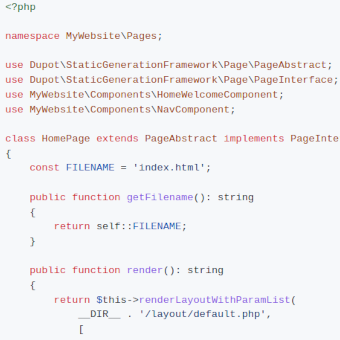

Dupot static-generation-framework
Générez des sites statiques en PHP pur : pas de moteur de template, pas de pipeline de build, zéro dépendance. Le framework qui propulse ce site !

Construisez des sites statiques en PHP pur : pas de moteur de template, pas de pipeline de build, aucune dépendance à l'exécution.
Dupot static-generation-framework est une toute petite librairie PHP pour générer des sites HTML statiques, prêts à être hébergés sur GitHub Pages, GitLab Pages, Netlify, un bucket S3 ou n'importe quel serveur web. Vous écrivez vos pages et vos composants sous forme de petites classes PHP, vous les rendez avec de simples vues PHP, et le framework écrit le résultat en fichiers .html. C'est tout.
D'ailleurs, le site que vous êtes en train de lire est généré avec !
Pourquoi l'utiliser ?
- Léger : une poignée de classes et zéro dépendance Composer
- Du PHP, rien que du PHP : vos vues sont des fichiers
.php, pas de nouveau langage de template à apprendre - Basé sur des composants : découpez votre site en briques réutilisables (en-tête, menu, cartes, pied de page…)
- Une classe par page : chaque page connaît son nom de fichier et sait comment se rendre
- Hébergeable partout : le résultat est du HTML pur, rapide et sécurisé, sans code serveur en production
- Entièrement sous votre contrôle : pas de magie ni de conventions imposées, il s'intègre à n'importe quel workflow (scripts, CI, GitHub Actions…)
Installation
composer require dupot/static-generation-frameworkPour démarrer encore plus vite, utilisez le projet squelette prêt à l'emploi : dupotStaticGenerationSkeleton.
Exemple : une page
class IndexPage extends PageAbstract implements PageInterface
{
public function getFilename(): string
{
return 'index.html';
}
public function render(): string
{
return $this->renderLayoutWithParamList(__DIR__ . '/layouts/default.php', [
'title' => 'Bienvenue',
'menu' => (new MenuComponent())->render(),
'content' => '<h1>Hello world</h1>',
]);
}
}Puis générez le site :
foreach ([new IndexPage(), new AboutPage()] as $page) {
$page->generateTo(__DIR__ . '/docs');
}Votre site statique est dans docs/ : commitez, poussez, vous êtes en ligne.
Publié sous licence LGPL.